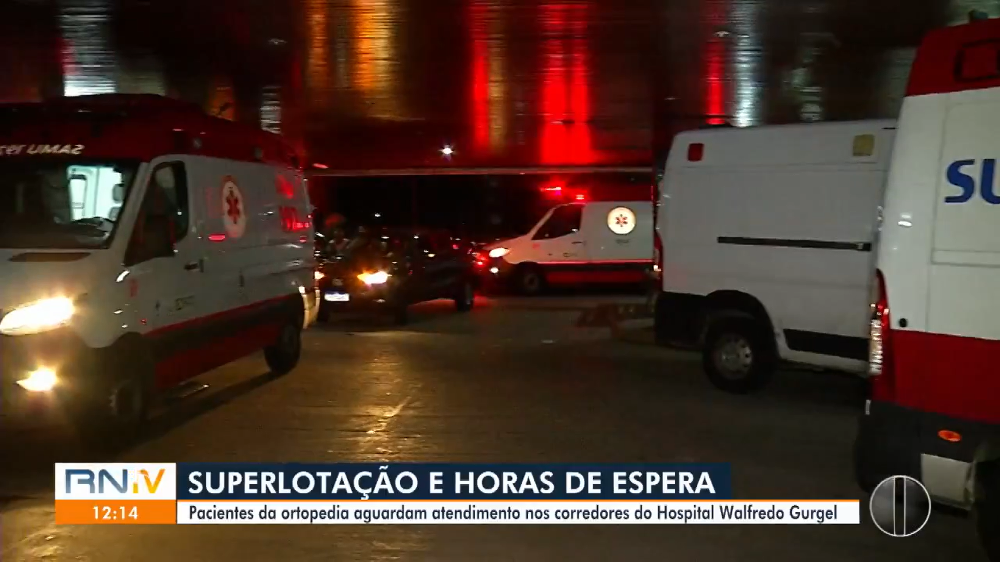
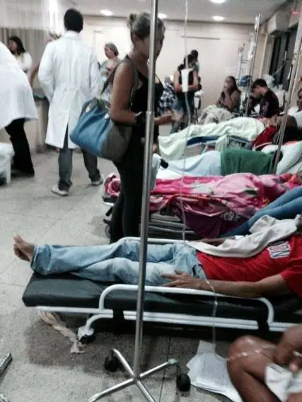

Banalização da falta de investimento em hospitais públicos
|
O Hospital Walfredo Gurgel (HWG), maior complexo hospitalar público do Rio Grande do Norte, enfrenta uma situação crítica de superlotação servidores do hospital e o Sindicato dos Trabalhadores em Saúde do RN (Sindsaúde/RN) denunciam a situação no Centro Cirúrgico e apontam que a falta de leitos está impactando nas condições de trabalho e o atendimento aos pacientes. Os relatos do Sindsaúde são de que há 49 pacientes acomodados nos corredores do Pronto Socorro, enquanto 26 ocupavam a sala de recuperação. Para agravar o cenário, três salas do Centro Cirúrgico permanecem bloqueadas com pacientes internados devido à indisponibilidade de leitos, comprometendo ainda mais o fluxo de atendimento. Segundo o Sindsaúde/RN, a superlotação tem tornado o ambiente de trabalho intransitável, dificultando a movimentação dos profissionais e comprometendo a qualidade do atendimento. "Não só pela quantidade atual de pacientes, mas pela quantidade que querem colocar em um setor só. Nós não temos condições de trabalhar. O espaço entre um paciente e outro é intransitável", desabafou uma funcionária em nota distribuída pelo Sindsaúde. Complementa a médica Nicelle de Morais, trabalhando há oito anos na unidade, afirma que nunca viu situação como a dos últimos dias: |

Matéria sobre superlotação do hospital. Reprodução: RNTV. Clique para mais detalhes. |
"A maioria das pessoas não sabe o que é passar alguns dias no Walfredo Gurgel. Elas só sabem quando precisam e vêm aqui e passam três, quatro, cinco dias numa maca no chão, com seu acompanhante sentado na cadeira, sem privacidade para trocar de fralda, sem privacidade para tomar um banheiro. Um banheiro para 100 pessoas", afirmou.
Condicições de trabalho abusivo
O Sindicato expõe uma realidade de sobrecarga e condições precárias de trabalho. Com uma demanda de cirurgias que ultrapassa os limites operacionais, o quadro de funcionários é insuficiente, contando com apenas quatro técnicos para atender uma quantidade excessiva de pacientes. A pressão para aceitar um aumento desproporcional no número de leitos é um agravante nas denúncias recebidas pelo Sindicato. "Eles querem nos obrigar a aceitar o Centro Cirúrgico que tem capacidade para 9 camas, com 20, e não aceitamos. Isso é desumano", lamentou uma das denunciantes.
Bloqueio de verbas
Para piorar a situação, hospital virou alvo de judicializações mais uma vez. Isso porque a Justiça do RN determinou o bloqueio de cerca de R$ 8,2 milhões nas contas do Estado. Segundo a decisão judicial, a quantia deve ser revertida integralmente ao Hospital Monsenhor Walfredo Gurgel para o abastecimento de medicamentos, insumos e material médico cirúrgico. O valor também se destina ao pagamento de dívidas de 2022 e 2023 junto a fornecedores.
A Secretaria de Estado da Saúde Pública (Sesap) contestou a decisão e informou que vai recorrer. O pedido do bloqueio aponta que o orçamento requerido pelo hospital à Secretaria Estadual de Saúde Pública (Sesap) para a compra dos itens mencionados, alcançava o valor de R$ 45.498.672,37, quantia que, se dividida em 12 parcelas ao ano, daria uma média de R$ 3.791.556,031 mensal. O montante ainda inclui despesas com a manutenção dos contratos vigentes.
Essa não é a primeira vez que o Estado tem recursos bloqueados para abastecimento de insumos e medicamentos no Walfredo Gurgel. Em 2019, a Justiça Federal atendeu pedido do Conselho Regional de Medicina (Cremern) que pedia o abastecimento da farmácia do Hospital Monsenhor Walfredo Gurgel/Clovis Sarinho. Na época, o bloqueio foi de R$ 1,6 milhão.

Matéria sobre bloqueio de verbas do hospital. Reprodução: RNTV. Clique para amis detalhes.
A reforma mal planejadaO Walfredo Gurgel também passará a funcionar com 50 leitos a menos até novembro. O motivo é a realização de uma reforma, que mesmo com o bloqueio da verba, foi aprovada, precarizando mais ainda até novembro, a reforma será em uma enfermaria no segundo andar do prédio, segundo Geraldo Neto, diretor do Hospital. Por conta disso, a unidade de saúde tem enfrentado problemas de superlotação e três salas de cirurgia precisaram ser fechadas para abrigar pacientes. Com isso, pacientes recém-cirurgiados têm levado mais tempo para conseguir um quarto. Geraldo Neto, que dirige a unidade, explicou que a reforma, juntamente com o aumento do número de atendimentos registrado desde julho, gerou a crise atual. Segundo ele, o cenário já era esperado. “A reforma da enfermaria do segundo andar bloqueou 50 leitos e isso está impactando diretamente no pronto-socorro e no centro cirúrgico, então, a superlotação já era esperada”, pontuou o gestor. |
 |